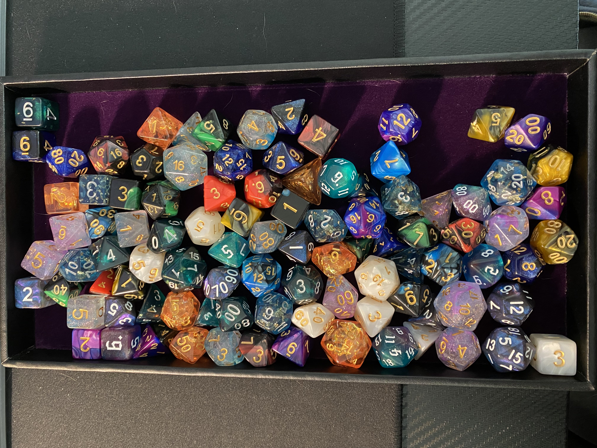

My name is Josh; I enjoy playing Dungeons and Dragons, writing, reading, music, hanging out with my pets, and watching shows. Collecting dice is a passion, not an addiction (I can stop whenever I want to) and below is a picture featuring (most of) the collection!
As mentioned, I am a big fan of writing and reading and try to extend this passion into most everything I do. Storytelling is a whole lot of fun for me- I spend hours writing my own tales, D&D campaigns, or watching other people tell stories.
